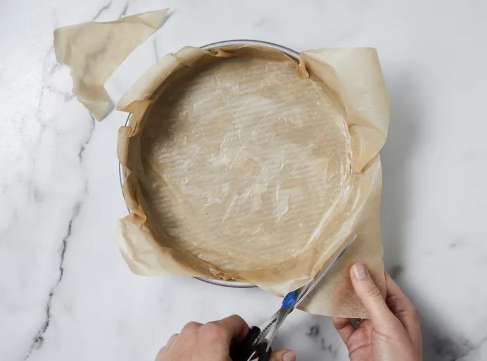

About
A rustic, crustless cheesecake originating from La Viña, a bar in San Sebastián, Spain. It is characterized by a caramelized surface and a creamy, custard-like interior, achieved by baking at high temperatures.
Ingredients
- Cream cheese
- Granulated sugar
- Sour cream
- Eggs
- Salt
- Rice flour or cake flour
- Heavy cream
- Parchment paper
Steps
- Heat the oven to 400°F (200°C). Grease a 10-inch springform pan and line it with parchment paper, letting it stick out 2–3 inches above the rim. Pressing one big sheet in and letting it fold naturally gives the classic rustic look.
- Beat the cream cheese and sugar until smooth, using a mixer or a wooden spoon.
- Mix in the salt, then add the eggs one at a time, beating well after each.
- Beat in the cream, then sift in the flour and mix on low.
- Pour the batter into the lined pan.
- Bake 50–60 minutes, until the top is deep brown and almost burnt. The center should still jiggle. It puffs up in the oven and sinks as it cools, which is normal!
- Let it cool completely, then remove the pan rim and peel off the parchment. Serve at room temperature.
Flavors
| Flavor | Extra Ingredients | Difficulty | Taste |
|---|---|---|---|
| Original | None | ⭐⭐ | Milky |
| Matcha | Matcha powder | ⭐⭐⭐ | Slightly bitter and earthy |
| Chocolate | Dark chocolate | ⭐⭐ | Rich and slightly bitter |
Video Tutorial
From Ingredients to Cake

Step 1: Line the pan with parchment paper